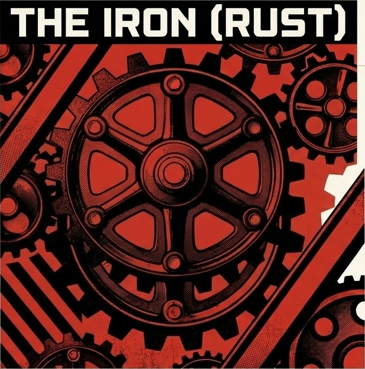
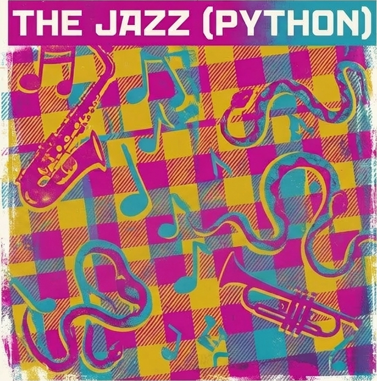

<!doctype html>
<html lang="en">
<head>
<meta charset="utf-8">
<meta name="viewport" content="width=device-width,initial-scale=1">
<title>Stilyagi · How — the mechanism</title>
<link rel="stylesheet" href="assets/colors_and_type.css">
<link rel="stylesheet" href="assets/motifs_and_components.css">
<link rel="stylesheet" href="assets/site.css">
<style>
.arch {
  max-width: 1240px; margin: 0 auto;
  padding: calc(var(--unit) * 6) calc(var(--unit) * 4) calc(var(--unit) * 4);
}
.arch-diagram {
  border: var(--rule-weight-2) solid var(--ink);
  background: var(--paper);
  padding: calc(var(--unit) * 5);
  position: relative;
  overflow: hidden;
}
.arch-diagram::before {
  content: "§ FIG. 01 · PIPELINE";
  position: absolute; top: 12px; right: 16px;
  font-family: var(--font-sans); font-size: .7rem;
  letter-spacing: .2em; color: var(--press-red);
  font-weight: 700;
}
.pipeline {
  display: grid;
  grid-template-columns: repeat(5, 1fr);
  gap: 0;
  align-items: stretch;
  margin-top: calc(var(--unit) * 2);
}
.stage {
  padding: calc(var(--unit) * 3) calc(var(--unit) * 2);
  border-right: var(--rule-weight) solid var(--ink);
  position: relative;
  display: flex; flex-direction: column;
  min-height: 240px;
}
.stage:last-child { border-right: 0; }
.stage .sidx {
  font-family: var(--font-display);
  font-weight: 900;
  color: var(--press-red);
  font-size: 2.4rem;
  line-height: 1;
  margin-bottom: 8px;
}
.stage h4 {
  font-family: var(--font-display);
  font-weight: 900;
  text-transform: uppercase;
  font-size: 1.1rem;
  margin: 0 0 10px;
  line-height: 1.05;
  letter-spacing: 0;
}
.stage p {
  font-family: var(--font-editorial);
  font-size: .95rem; line-height: 1.45;
  margin: 0 0 8px;
}
.stage .layer-tag {
  margin-top: auto;
  font-family: var(--font-sans);
  font-size: .64rem;
  letter-spacing: .16em;
  text-transform: uppercase;
  font-weight: 700;
  padding: 3px 6px 2px;
  align-self: flex-start;
}
.layer-rust { background: var(--ink); color: var(--paper); }
.layer-py { background: var(--press-red); color: var(--paper); }
.layer-bridge { background: var(--jazz-ochre); color: var(--ink); }

.arrow-row {
  display: grid; grid-template-columns: repeat(5, 1fr);
  text-align: center;
  margin-top: 8px;
  font-family: var(--font-editorial);
  font-size: 1.8rem;
  color: var(--press-red);
}
.arrow-row span:last-child { visibility: hidden; }

.boundary {
  margin-top: calc(var(--unit) * 4);
  display: grid;
  grid-template-columns: 1fr 1fr;
  gap: calc(var(--unit) * 3);
}
.boundary .layer-card {
  border: var(--rule-weight) solid var(--ink);
  padding: calc(var(--unit) * 3);
  background: var(--paper);
}
.boundary .layer-card.rust { background: var(--ink); color: var(--paper); }
.boundary .layer-card.rust h4 { color: var(--paper); }
.boundary .layer-card.rust ul li { color: var(--paper); border-bottom-color: rgba(239,228,206,.25); }
.boundary .layer-card.rust ul li::before { color: var(--press-red); }
.boundary .layer-card h4 {
  font-family: var(--font-display);
  font-weight: 900;
  text-transform: uppercase;
  font-size: 1.4rem;
  margin: 0 0 10px;
}
.boundary .layer-card .sub {
  font-family: var(--font-sans);
  font-size: .7rem; letter-spacing: .16em;
  text-transform: uppercase; color: var(--press-red); font-weight: 700;
  margin-bottom: 12px;
}
.boundary .layer-card ul { list-style: none; padding: 0; margin: 0; }
.boundary .layer-card li {
  padding: 8px 0 8px 1.6em;
  border-bottom: 1px dashed rgba(15,15,15,.2);
  position: relative;
  font-family: var(--font-editorial);
  font-size: 1rem;
  line-height: 1.4;
}
.boundary .layer-card li::before {
  content: "☞"; position: absolute; left: 0; top: 8px;
  font-family: var(--font-editorial);
  color: var(--press-red);
}
.boundary .layer-card li:last-child { border-bottom: 0; }

/* Rule example */
.rule-example {
  max-width: 1240px; margin: 0 auto;
  padding: calc(var(--unit) * 6) calc(var(--unit) * 4);
}
.ex-wrap {
  display: grid;
  grid-template-columns: 1fr 1fr;
  gap: 0;
  border: var(--rule-weight-2) solid var(--ink);
}
.ex-wrap > .ex-col {
  padding: 0;
  background: var(--paper);
}
.ex-wrap > .ex-col + .ex-col {
  border-left: var(--rule-weight) solid var(--ink);
}
.ex-header {
  padding: 14px 20px;
  border-bottom: var(--rule-weight) solid var(--ink);
  font-family: var(--font-sans);
  font-size: .72rem; letter-spacing: .18em;
  text-transform: uppercase; color: var(--ink);
  display: flex; justify-content: space-between; align-items: center;
  background: var(--paper-shade);
}
.ex-header .red { color: var(--press-red); font-weight: 700; }
.ex-body { padding: 0; }
.ex-body pre { margin: 0; padding: 20px 22px; }

/* Terminal */
.term {
  background: var(--ink);
  color: var(--paper);
  font-family: var(--font-mono);
  font-size: .88rem;
  padding: 20px 22px;
  min-height: 100%;
  line-height: 1.55;
  overflow-x: auto;
}
.term .prompt { color: var(--signal-sage); }
.term .cmd { color: var(--paper); }
.term .dim { color: rgba(239,228,206,.55); }
.term .err { color: var(--press-red); font-weight: 700; }
.term .warn { color: var(--jazz-ochre); font-weight: 700; }
.term .path { color: var(--jazz-cyan); }
.term .code { color: var(--press-red); font-weight: 700; }
.term .msg { color: var(--paper); }
.term .caret { color: var(--press-red); }
.term .rule { color: var(--ink-soft); }
.term .final { color: var(--signal-sage); }

/* CLI contract */
.cli {
  max-width: 1240px; margin: 0 auto;
  padding: calc(var(--unit) * 6) calc(var(--unit) * 4);
}
.cli-table {
  border: var(--rule-weight-2) solid var(--ink);
  background: var(--paper);
}
.cli-row {
  display: grid;
  grid-template-columns: 200px minmax(0, 1.1fr) minmax(0, 1.3fr);
  border-bottom: var(--rule-weight) solid var(--ink);
}
.cli-row:last-child { border-bottom: 0; }
.cli-row .cmd {
  padding: calc(var(--unit) * 3);
  background: var(--paper-shade);
  border-right: var(--rule-weight) solid var(--ink);
  font-family: var(--font-mono);
  font-size: 1rem;
  font-weight: 700;
  color: var(--ink);
}
.cli-row .cmd .accent { color: var(--press-red); }
.cli-row .sum {
  padding: calc(var(--unit) * 3);
  font-family: var(--font-editorial);
  font-size: 1.02rem;
  line-height: 1.45;
  border-right: var(--rule-weight) solid var(--ink);
}
.cli-row .opts {
  padding: calc(var(--unit) * 3);
  font-family: var(--font-mono);
  font-size: .82rem;
  color: var(--ink-soft);
  line-height: 1.6;
}
.cli-row .opts code {
  color: var(--press-red);
  font-family: var(--font-mono);
  background: none; padding: 0;
}

.flowtext {
  max-width: 1240px; margin: 0 auto;
  padding: calc(var(--unit) * 6) calc(var(--unit) * 4);
  display: grid;
  grid-template-columns: 260px 1fr;
  gap: calc(var(--unit) * 6);
}
.flowtext .margin-note {
  font-family: var(--font-sans);
  font-size: .72rem;
  letter-spacing: .16em;
  text-transform: uppercase;
  color: var(--ink-soft);
  line-height: 1.8;
  position: sticky; top: 100px; align-self: start;
}
.flowtext .margin-note .red { color: var(--press-red); font-weight: 700; display: block; margin-bottom: 6px; }
.flowtext .body h3 {
  font-family: var(--font-display);
  font-size: 1.8rem;
  text-transform: uppercase;
  margin: calc(var(--unit) * 4) 0 calc(var(--unit) * 2);
  line-height: .95;
}
.flowtext .body h3:first-child { margin-top: 0; }
.flowtext .body p {
  font-family: var(--font-editorial);
  font-size: 1.1rem;
  line-height: 1.55;
  max-width: 64ch;
}
.flowtext .body p + p { text-indent: 1.8em; }

/* Layer illustrations */
.layer-illo {
  display: grid;
  grid-template-columns: 1fr 1fr;
  gap: calc(var(--unit) * 3);
  margin-top: calc(var(--unit) * 4);
}
.layer-illo figure {
  margin: 0;
  border: var(--rule-weight) solid var(--ink);
  overflow: hidden;
  position: relative;
}
.layer-illo figure img {
  width: 100%;
  height: 160px;
  object-fit: cover;
  display: block;
}
.layer-illo figcaption {
  padding: 8px 12px;
  background: var(--paper);
  font-family: var(--font-sans);
  font-size: .72rem;
  letter-spacing: .14em;
  text-transform: uppercase;
  color: var(--ink-soft);
  border-top: var(--rule-weight) solid var(--ink);
}

/* CLI frame image */
.cli-frame-img {
  margin-top: calc(var(--unit) * 4);
  border: var(--rule-weight-2) solid var(--ink);
  overflow: hidden;
}
.cli-frame-img img {
  width: 100%;
  height: auto;
  display: block;
}

@media (max-width: 900px) {
  .pipeline, .boundary, .ex-wrap, .cli-row, .flowtext { grid-template-columns: 1fr; }
  .stage { border-right: 0; border-bottom: var(--rule-weight) solid var(--ink); min-height: auto; }
  .arrow-row { display: none; }
  .cli-row .cmd, .cli-row .sum { border-right: 0; border-bottom: var(--rule-weight) solid var(--ink); }
  .layer-illo { grid-template-columns: 1fr; }
}
</style>
</head>
<body>
<div id="root"></div>

<script src="https://unpkg.com/react@18.3.1/umd/react.development.js" integrity="sha384-hD6/rw4ppMLGNu3tX5cjIb+uRZ7UkRJ6BPkLpg4hAu/6onKUg4lLsHAs9EBPT82L" crossorigin="anonymous"></script>
<script src="https://unpkg.com/react-dom@18.3.1/umd/react-dom.development.js" integrity="sha384-u6aeetuaXnQ38mYT8rp6sbXaQe3NL9t+IBXmnYxwkUI2Hw4bsp2Wvmx4yRQF1uAm" crossorigin="anonymous"></script>
<script src="https://unpkg.com/@babel/standalone@7.29.0/babel.min.js" integrity="sha384-m08KidiNqLdpJqLq95G/LEi8Qvjl/xUYll3QILypMoQ65QorJ9Lvtp2RXYGBFj1y" crossorigin="anonymous"></script>
<script type="text/babel" src="assets/Primitives.jsx"></script>
<script type="text/babel" src="assets/Chrome.jsx"></script>

<script type="text/babel">
function PageIntro() {
  return (
    <section className="page-intro">
      <div className="wrap">
        <div>
          <div className="folio">§ 02 · The mechanism</div>
          <h1>How <span className="accent">Stilyagi</span> works.</h1>
        </div>
        <p className="lede">
          Five stages from filesystem to diagnostic. Rust extracts structure.
          Python analyses it. A capability planner decides which linguistic
          providers to load. The formatter renders verdicts. CI reads them.
        </p>
      </div>
    </section>
  );
}

function Architecture() {
  const stages = [
    { n: "01", h: "Discover", p: "Config loading, path walking, owner attribution. A normalised set of FileInputs arrives at the extractor.", layer: "layer-py" },
    { n: "02", h: "Extract", p: "Rust reads source bytes and emits a region-oriented Document IR with segments, a line_index, and a content_hash.", layer: "layer-rust" },
    { n: "03", h: "Plan", p: "The capability planner inspects enabled rules and materialises only the annotators that are actually required.", layer: "layer-bridge" },
    { n: "04", h: "Analyse", p: "Rules run against typed region wrappers. Diagnostics, suppressions, and fix payloads are accumulated deterministically.", layer: "layer-py" },
    { n: "05", h: "Report", p: "The formatter renders plain text, JSON, or SARIF. Exit codes are disciplined. CI is happy.", layer: "layer-py" },
  ];
  return (
    <section className="arch">
      <div className="section-head">
        <div className="num">A</div>
        <div>
          <div className="tag">§ Architecture · pipeline</div>
          <h2>Five stages, one contract.</h2>
        </div>
      </div>

      <div className="arch-diagram">
        <div className="pipeline">
          {stages.map((s) => (
            <div className="stage" key={s.n}>
              <div className="sidx">{s.n}</div>
              <h4>{s.h}</h4>
              <p className="editorial">{s.p}</p>
              <span className={`layer-tag ${s.layer}`}>
                {s.layer === "layer-rust" ? "Rust"
                 : s.layer === "layer-bridge" ? "Bridge"
                 : "Python"}
              </span>
            </div>
          ))}
        </div>
        <div className="arrow-row">
          <span>☞</span><span>☞</span><span>☞</span><span>☞</span><span>—</span>
        </div>

        <div className="boundary">
          <div className="layer-card rust">
            <div className="sub" style={{color:"var(--press-red)"}}>§ Rust layer</div>
            <h4>Extraction only.</h4>
            <ul>
              <li>Parses Markdown, MDX, reStructuredText, Python, and Rust source.</li>
              <li>Emits a region-oriented Document IR keyed by byte offsets.</li>
              <li>Computes the <code>line_index</code> and <code>content_hash</code>.</li>
              <li>Owns <em>no</em> rules. Owns <em>no</em> diagnostics. Owns <em>no</em> policy.</li>
              <li>Narrow FFI boundary: one data structure crosses the line.</li>
            </ul>
          </div>
          <div className="layer-card">
            <div className="sub">§ Python layer</div>
            <h4>Analysis, fixes, and output.</h4>
            <ul>
              <li>Owns the rule engine, capability planner, and diagnostic model.</li>
              <li>Provides typed wrappers over regions: Heading, Paragraph, Code, Docstring.</li>
              <li>Plans spaCy and spellchecker providers on demand.</li>
              <li>Applies safe fixes; flags unsafe fixes; refuses to touch synthetic spans.</li>
              <li>Emits text, JSON, and SARIF with stable ordering.</li>
            </ul>
          </div>
        </div>

        <div className="layer-illo">
          <figure>
            
            <figcaption>☞ The Iron · Rust · extraction only</figcaption>
          </figure>
          <figure>
            
            <figcaption>☞ The Jazz · Python · analysis &amp; policy</figcaption>
          </figure>
        </div>
      </div>
    </section>
  );
}

function RuleExample() {
  const ruleCode = `# rules/heading_depth.py
from stilyagi.rule import Rule, Level
from stilyagi.regions import Heading

class HeadingDepthRule(Rule):
    """Reject Markdown headings deeper than level 3."""
    code = "MD201"
    name = "heading-depth"
    level = Level.WARNING
    pack = "default"
    capabilities = ()   # no spaCy, no spellchecker

    def check_heading(self, h: Heading) -> None:
        if h.depth > 3:
            self.report(
                span=h.marker_span,
                message=f"Heading depth {h.depth} exceeds maximum of 3.",
                suggestion="Promote to a new section or demote to bold text.",
            )`;

  return (
    <section className="rule-example">
      <div className="section-head">
        <div className="num">B</div>
        <div>
          <div className="tag">§ Live rule · author → output</div>
          <h2>A rule is a Python class.</h2>
        </div>
      </div>

      <div className="ex-wrap">
        <div className="ex-col">
          <div className="ex-header">
            <span>rules/<span className="red">heading_depth.py</span></span>
            <span className="red">author view</span>
          </div>
          <div className="ex-body">
            <pre className="code"><code>{ruleCode}</code></pre>
          </div>
        </div>
        <div className="ex-col">
          <div className="ex-header">
            <span>$ <span className="red">stilyagi check</span> docs/</span>
            <span className="red">diagnostic view</span>
          </div>
          <div className="ex-body">
            <div className="term">
              <div><span className="prompt">$</span> <span className="cmd">stilyagi check docs/</span></div>
              <div className="dim">stilyagi 0.4.0 · loaded 1 pack · planned 0 annotators</div>
              <div className="dim">scanning 14 files · cache hit 11 · analysed 3</div>
              <br/>
              <div><span className="path">docs/guide/advanced.md</span><span className="dim">:72:1</span></div>
              <div><span className="err">warning[MD201]</span> <span className="msg">Heading depth 4 exceeds maximum of 3.</span></div>
              <br/>
              <div className="dim">  70 │ ### Advanced topics</div>
              <div className="dim">  71 │ </div>
              <div>  72 │ <span className="code">#### Caching strategy</span></div>
              <div>     │ <span className="caret">^^^^</span> <span className="rule">heading-depth (MD201)</span></div>
              <div className="dim">  73 │ </div>
              <br/>
              <div className="dim">  = help: Promote to a new section or demote to bold text.</div>
              <div className="dim">  = suppress: &lt;!-- stilyagi: disable-line MD201 --&gt;</div>
              <br/>
              <div><span className="final">1 warning · 0 errors · 3 files analysed in 142 ms</span></div>
            </div>
          </div>
        </div>
      </div>
    </section>
  );
}

function BetweenText() {
  return (
    <section className="flowtext">
      <aside className="margin-note">
        <span className="red">§ Note · FFI discipline</span>
        The Rust → Python boundary is crossed <em>once</em> per file, not per rule.
        <br/><br/>
        <span className="red">§ Note · Caching</span>
        Diagnostics are keyed by <code>(content_hash, ruleset_id, capability_set)</code>.
      </aside>
      <div className="body">
        <h3>The IR is the <span style={{color:"var(--press-red)"}}>contract</span>.</h3>
        <p className="editorial">
          Rules never see raw source bytes directly, and never drive a parser.
          They receive a typed region — a <code>Heading</code>, a
          <code> Paragraph</code>, a <code>Docstring</code> — backed by a
          single shared Document IR. The region knows its span, its depth,
          its content, its markers. It knows whether it was synthesised from
          structural inference or extracted verbatim.
        </p>
        <p className="editorial">
          This is what separates Stilyagi from a regex harness. A regex doesn't
          know whether it is inside a code block, a docstring, a comment, or
          a heading. A Stilyagi rule subscribes to region classes and is only
          ever called for the ones it asked for — which is also what lets the
          capability planner skip spaCy loading when no enabled rule needs it.
        </p>

        <h3>Determinism is load-bearing.</h3>
        <p className="editorial">
          Every diagnostic carries a canonical sort key. Files are ordered by
          normalised path; diagnostics within a file by byte offset, rule code,
          and stable message hash. Two rules cannot emit fixes to overlapping,
          non-identical ranges without one losing explicitly. Stilyagi wants CI
          to be bored, and agents to have something they can trust.
        </p>
      </div>
    </section>
  );
}

function CLIContract() {
  const rows = [
    { cmd: ["stilyagi ", "check"], sum: "Analyse paths or stdin. The primary verb. Emits diagnostics and the only verb CI runs.", opts: "--format text|json|sarif\n--fix=safe|unsafe|none\n--select CODE,CODE\n--ignore PATTERN\n--stdin-filename PATH\n--config PATH" },
    { cmd: ["stilyagi ", "fix"], sum: "Apply autofixes within the declared safety class. Refuses overlapping non-identical edits.", opts: "--safety safe|unsafe\n--dry-run\n--diff\n--preview" },
    { cmd: ["stilyagi ", "rule"], sum: "Inspect rules. list, show <code>, describe <code>, explain <code>. For humans and for agents.", opts: "list\nshow MD201\ndescribe MD201\nexplain MD201" },
    { cmd: ["stilyagi ", "dump-ir"], sum: "Emit the extractor's view of a file. Essential for debugging rule authors and maintainers alike.", opts: "--file PATH\n--format json|pretty\n--include annotations\n--mask-hashes" },
    { cmd: ["stilyagi ", "config"], sum: "Print, validate, or discover configuration. Respects precedence: CLI → file → pyproject → defaults.", opts: "print\nvalidate\nexplain KEY\nlocate" },
    { cmd: ["stilyagi ", "cache"], sum: "Inspect and clear the analysis cache. Per-file keys derive from content_hash, ruleset, capabilities.", opts: "info\nprune\nclear\npath" },
  ];
  return (
    <section className="cli">
      <div className="section-head">
        <div className="num">C</div>
        <div>
          <div className="tag">§ CLI contract</div>
          <h2>Six verbs. No surprises.</h2>
        </div>
      </div>

      <div className="cli-frame-img">
        
      </div>

      <div className="cli-table" style={{marginTop:"calc(var(--unit) * 4)"}}>
        {rows.map((r, i) => (
          <div className="cli-row" key={i}>
            <div className="cmd">
              <span className="dim" style={{color:"var(--ink-soft)"}}>{r.cmd[0]}</span>
              <span className="accent">{r.cmd[1]}</span>
            </div>
            <div className="sum">{r.sum}</div>
            <div className="opts">
              {r.opts.split("\n").map((line, j) => {
                const parts = line.match(/^(--?\S+)(.*)$/);
                if (!parts) return <div key={j}>{line}</div>;
                return <div key={j}><code>{parts[1]}</code>{parts[2]}</div>;
              })}
            </div>
          </div>
        ))}
      </div>
    </section>
  );
}

function Capability() {
  return (
    <section className="flowtext">
      <aside className="margin-note">
        <span className="red">§ Planner · what it does</span>
        Inspects enabled rules. Collects their declared capabilities.
        Loads grammar, spelling, terminology, and custom providers on demand.
        Never loads what no enabled rule asked for.
      </aside>
      <div className="body">
        <h3>The <span style={{color:"var(--press-red)"}}>capability planner</span>.</h3>
        <p className="editorial">
          Linguistic providers are expensive. A small lint run that only checks
          heading depth should not pay for spaCy model loading, a symspell
          dictionary, or a terminology index. The planner exists to prevent
          this tax.
        </p>
        <p className="editorial">
          Each rule declares a <code>capabilities</code> tuple. At startup, the
          planner intersects the enabled ruleset with the capability graph and
          materialises only the providers required. Rules never import providers
          directly — they ask the region for an annotation, and the planner
          guarantees it will be there or the rule will be skipped with a single
          loud diagnostic.
        </p>
        <p className="editorial">
          The same mechanism lets Stilyagi stay offline: grammar and spelling
          providers ship as optional extras, <em>stilyagi[grammar]</em> and
          <em> stilyagi[spell]</em>, and the planner refuses to enable a rule
          whose capability is absent. The base install does nothing clever,
          reaches no network, and stays useful.
        </p>
      </div>
    </section>
  );
}

function NextLinks() {
  return (
    <section style={{maxWidth:"1240px", margin:"0 auto", padding:"0 calc(var(--unit) * 4) calc(var(--unit) * 10)", textAlign:"center"}}>
      <div className="pullquote" style={{maxWidth:"36ch",margin:"0 auto",fontSize:"2rem"}}>
        "The IR is the contract. The rule is the policy. Everything else is
        scaffolding."
        <cite>— Maintainer's rubric, § 4</cite>
      </div>
      <div style={{marginTop:"calc(var(--unit) * 4)", display:"flex",gap:14,justifyContent:"center",flexWrap:"wrap"}}>
        <a href="design.html" style={{fontFamily:"var(--font-sans)",fontWeight:700,fontSize:".82rem",letterSpacing:".14em",textTransform:"uppercase",color:"var(--ink)",textDecoration:"none",borderBottom:"2px solid var(--press-red)",paddingBottom:"2px"}}>☞ Open the IR inspector</a>
        <a href="roadmap.html" style={{fontFamily:"var(--font-sans)",fontWeight:700,fontSize:".82rem",letterSpacing:".14em",textTransform:"uppercase",color:"var(--ink)",textDecoration:"none",borderBottom:"2px solid var(--press-red)",paddingBottom:"2px"}}>☞ Read the roadmap</a>
        <a href="docs.html" style={{fontFamily:"var(--font-sans)",fontWeight:700,fontSize:".82rem",letterSpacing:".14em",textTransform:"uppercase",color:"var(--ink)",textDecoration:"none",borderBottom:"2px solid var(--press-red)",paddingBottom:"2px"}}>☞ Rules &amp; config</a>
      </div>
    </section>
  );
}

function App() {
  return (
    <>
      <SiteMast current="how" />
      <PageIntro />
      <Architecture />
      <RuleExample />
      <BetweenText />
      <CLIContract />
      <Capability />
      <NextLinks />
      <Colophon />
      <TweaksDock />
    </>
  );
}

ReactDOM.createRoot(document.getElementById("root")).render(<App />);
</script>
</body>
</html>
